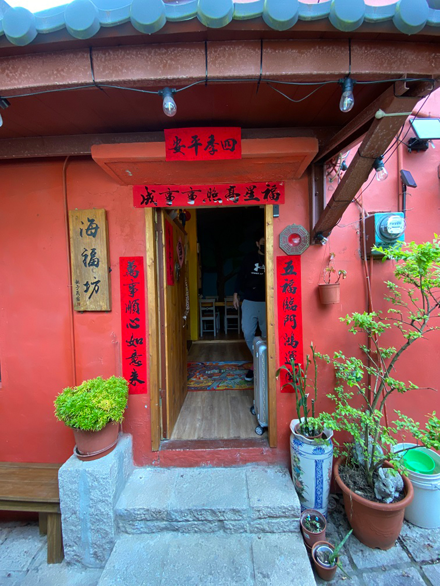
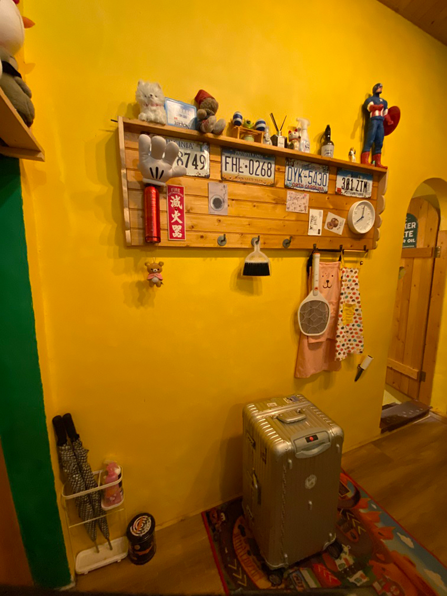
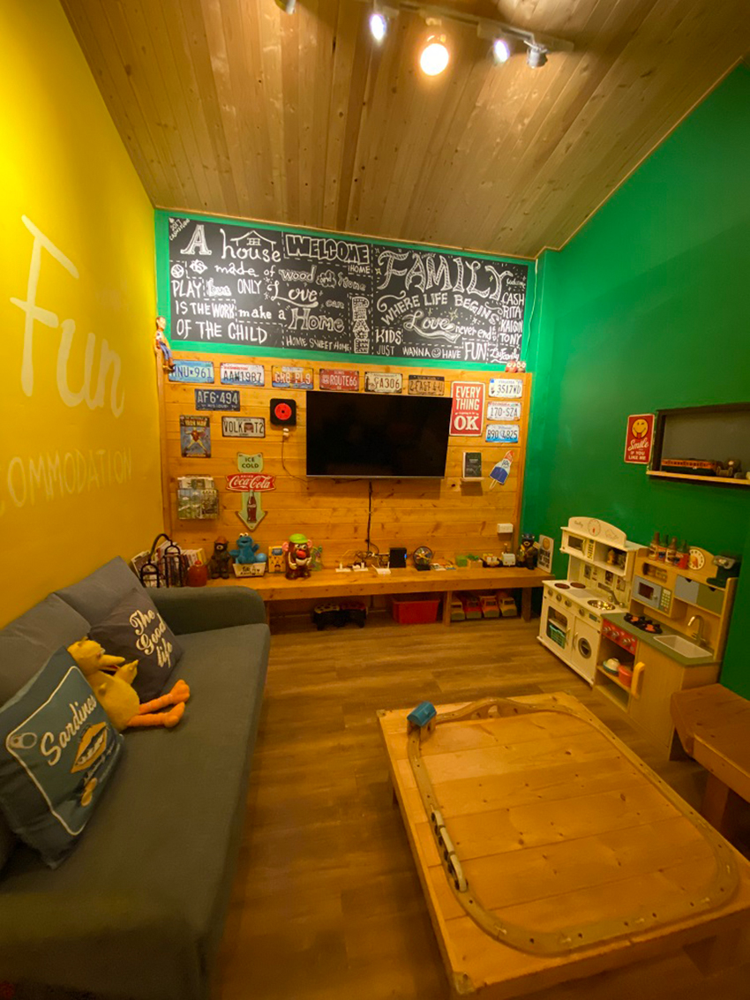
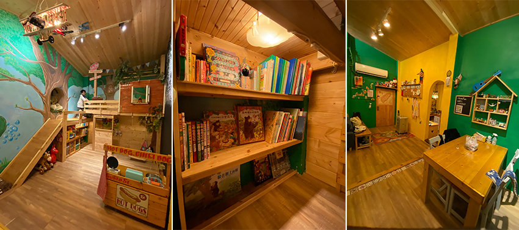

2020年暑假旅遊最夯的話題莫過於桃園青埔新開幕的Xpark水族館了，但是當時的小雞多多(兒子的小名)才兩歲多，應該還無法理解那些海洋生物們的可愛之處，所以這個景點一直被我放在口袋中(其實是廢柴媽媽我自己不想去人擠人而已…) 時隔兩年後的暑假前夕，趁著疫情期間大家都比較克制外出遊玩的慾望，趕緊帶著小雞多多去拜訪海洋住民們！
Xpark都會型水生公園是由日本橫浜八景島團隊所打造，館區共分成3個樓層12個主題區：
1F：漫步叢林、潮間戲灘、世外桃源、與眾同樂
2F：爾摩沙、癒見水母、企鵝奇遇
3F：珊瑚潛行、暖海生機、雨林探險、寒帶行凍、深海尋秘、虛實互動
從2樓的入口進入Xpark場館的福爾摩沙區立刻映入眼簾的是一整面的大玻璃牆，裡面有各式各樣大大小小的魚兒在其中悠游，那畫面讓我立刻聯想到Finding Dory在大洋區場館的家，實在太美麗了！
|  |
接著來到了小朋友們很喜愛的虛實互動區(彩繪區)，Xpark使用先進的多媒體設備，讓小朋友們在平板電腦上發揮想像力著色出獨一無二的海洋生物們，再將成品呈現到牆面的海洋世界上中，小雞多多一整個畫到欲罷不能，接連畫了好幾隻~
|  |
隨著導覽動線，我們來到了3樓有胖嘟嘟海豹的寒帶行凍區，恰巧目睹了兩隻海豹在爭吵的畫面 (裡面的工讀生有話好說，不要打架阿！)
|  |
之後我們來到了最受小朋友們歡迎的企鵝奇遇區，小雞多多蹦蹦跳跳興奮地對著企鵝直揮手，企鵝也很賣力展現牠的泳姿。
|  |
除了企鵝之外，Xpark還有一個也很吸引小朋友目光的館區，就是位於一樓的戶外與眾同樂區，每天的活動場次時間、與展示內容不是固定的，活動時間可於進場時到櫃台螢幕查看，至於出場的生物來賓選擇則是以當天牠們的體能狀況作為考量。不知道是不是我們去的那天氣溫太高，看到的兩位來賓都不是海洋裡會出現的住民，分別是熊狸與栗翅鷹！
 |
雖然很遺憾沒有看到最期待的海獅拍手表演，不過能這麼近距離看到像小熊一樣會撒嬌的熊狸，以及帥氣飛行的栗翅鷹，還是讓小雞多多開心的直喊下次還要再來看牠們。